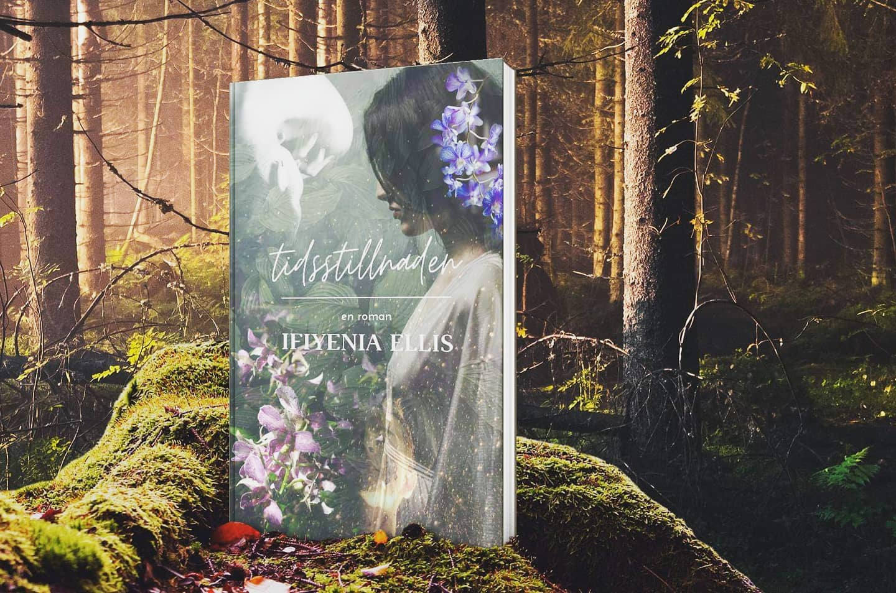

Biography
Ifiyenia Ellis was born in 1986, growing up in a northern suburb of Stockholm, Sweden,
with one foot up north - Umeå, on her fathers side - and one down south - Athens, Greece,
on her mothers side.
Books were always close to her heart, and mind. The best summer memories are the warm
days and nights in Greece, driving up to northen Sweden to her grandmothers cottage by the
forest, and those rainy days at home - where she would spend hours, whole days, reading book
after book. She started writing her own stories at the early age of four and simply never stopped.
Short stories, illustrated books, theatre plays and even one for the radio, the stories just kept
coming.
In 2010 she studied creative writing for one year at Sundbybergs Folkhögskola, for the first
time being in that creative atmosphere where she would feel at home, but the dream of becoming
an actual published author still felt distant and diffuse - until she started on her first novel,
as the last project of the course. Writing a full novel suddenly felt doable. However, it wasn't
until 2018, whilst on maternity leave with her second child, that the dream attacked her with such
force that she no longer could duck away from it. She started writing what would become I hand med min syster
and then the dream was no longer just a dream - it became a goal, something she has worked hard to reach
ever since.
Home
Bibliography
TIDSSTILLNADEN

Tidsstillnaden is a novel about 36 year old Alexandra, haunted by dreams and
visions of unknown source, waking up each morning without having slept. Sometimes,
with pages in front of her, letters written from the subconscious.
At young age she moved to England in hopes of finding answers about her missing mother,
but after spending half her life there something makes her move back to Sweden,
without any answers. But the dreams and visions are getting worse, and when she,
after months of job searching, starts working in the reception of what once was the
psychiatric clinic where her mother had been held against her will, it gets even worse...
What truths are waiting for her, and who do the other voices belong to?
Home
GRYNINGSFÅGLAR, series
">
The series Gryningsfåglar starts with the novel I HAND MED MIN SYSTER, set in a close future
where Europe, after a third world war, has been divided into two countries - Oriente, the eastern side,
and Okcidente, the western side.
I hand med min syster starts with Miranda, still grieving the loss of her sister, who passed away
less than a year earlier. Military on the streets, closed borders and strict rules with harsh penalties for the ones
breaking them
Home
EM OCH ELLE, series
The children's books about the two sisters, Em and Elle, are somewhat inspired
by the authors two daughters; the idea for the first book Em och Elle möter en skogsande
came after watching the two girls playing in the lounge of their apartment, having a pretend picnic.
However, the Forest Spirit that the pair meet in the book, is completely fictional... or is it?
The series continues to follow the two in different settings, facing new problems
which are connected to real world issues such as climate change, and what can happen
if you don't look after nature and our Mother Earth.